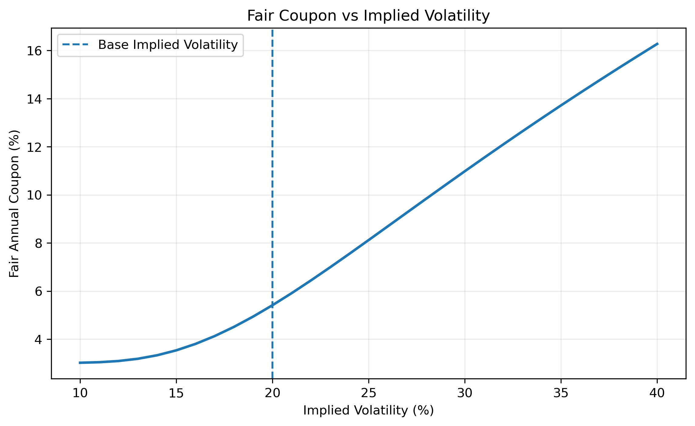
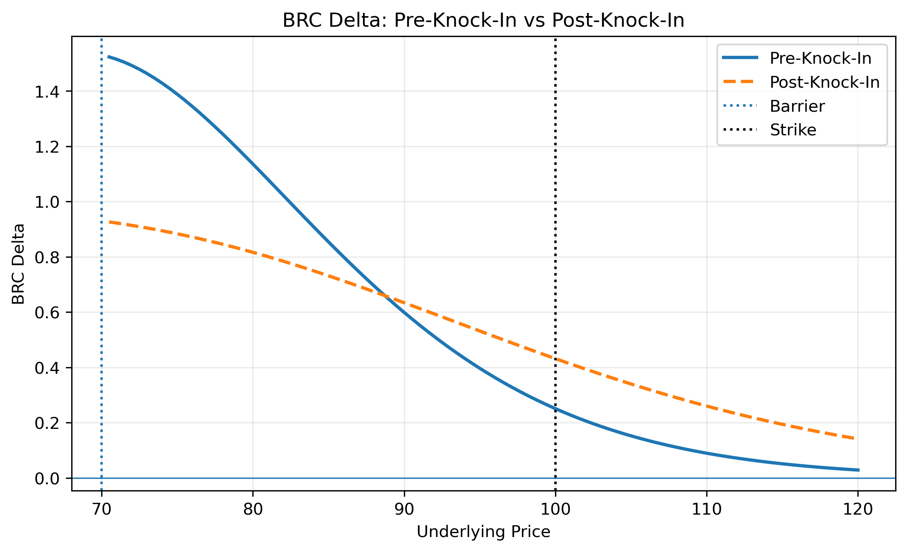
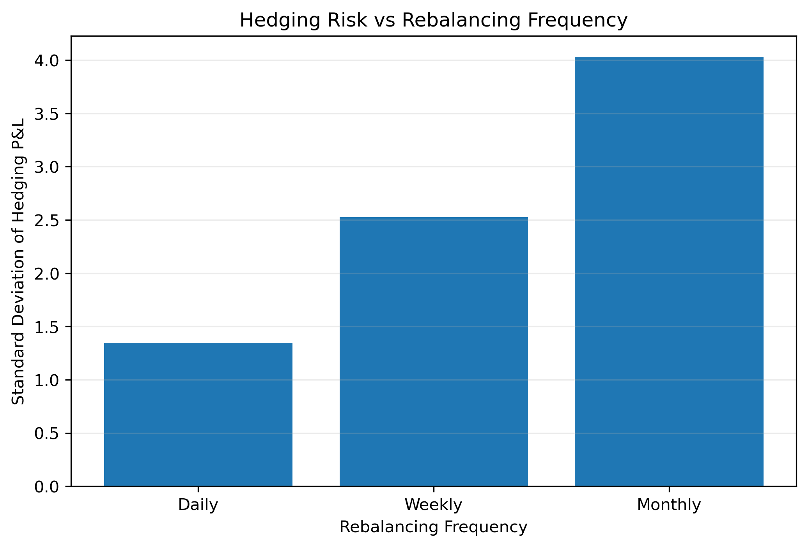
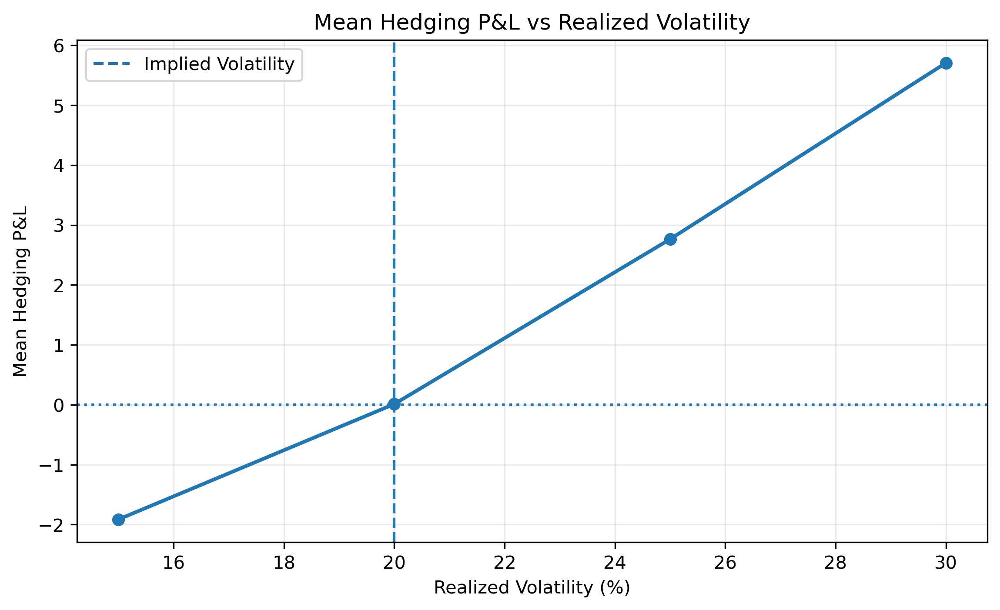

EQUITY DERIVATIVES · STRUCTURED PRODUCTS · HEDGING
Barrier Reverse Convertible
Pricing & Dynamic Hedging
Pricing, structuring and dynamic hedging of a single-stock Barrier Reverse Convertible, with continuous barrier monitoring, Monte Carlo simulation and analysis of residual hedging P&L.
KEY RESULTS
Trade Overview
01 · PRODUCT STRUCTURE
Understanding the Barrier Reverse Convertible
The project considers a 1-year single-stock Barrier Reverse Convertible issued at par. The note pays a fixed unconditional quarterly coupon while exposing the investor to downside risk in the underlying.
The strike is set at 100% of the initial stock price and the downside barrier at 70%. The barrier is continuously monitored throughout the life of the trade.
If the barrier is never breached, the investor receives the full principal at maturity. If the barrier has been breached and the stock finishes below the strike, the redemption amount falls with the underlying.
02 · PRICING FRAMEWORK
Pricing the Embedded Barrier Option
The underlying is modeled under the risk-neutral measure using Black-Scholes dynamics with a 3% risk-free rate, 2% dividend yield and 20% implied volatility.
The embedded down-and-in put is valued using in-out parity. The corresponding continuously monitored down-and-out put is priced analytically using the absorbing transition density of the log-price process.
This decomposition separates the funding component of the note from the embedded equity optionality and provides a consistent framework for pricing, structuring and risk analysis.
03 · STRUCTURING
Fair Coupon Calibration
The annual coupon is calibrated so that the initial model value of the Barrier Reverse Convertible equals its issue price of 100.
Higher implied volatility increases the value of the downside option sold by the investor. This increases the option premium available to finance the coupon and therefore affects the coupon that can be offered when structuring the note.

The relationship highlights one of the central structuring mechanisms of the product: the enhanced coupon is partly financed by the value of the downside optionality sold by the investor.
04 · BARRIER RISK
Pre- and Post-Knock-In Risk
Barrier products are path dependent. The current underlying price alone is not sufficient to determine the value and hedge of the note: the desk must also know whether the downside barrier has previously been breached.
Before knock-in, the embedded option is a down-and-in put. Once the barrier has been breached, it becomes economically equivalent to a vanilla put for the remaining life of the trade.

The comparison illustrates why barrier state is a critical trading variable. Two notes with the same current spot can have different delta exposures depending on whether the barrier has already been breached.
05 · DYNAMIC HEDGING
Managing the Desk's Delta Exposure
The issuing desk is short the structured note and dynamically manages the resulting equity exposure using the underlying stock.
At each hedge date, the BRC delta is recomputed using the current spot, remaining maturity and barrier state. The stock position is then adjusted to neutralize the local first-order equity exposure.
A self-financing hedge account tracks stock transactions, cash-account financing, dividend income, coupon payments and the final redemption of the note.
Delta neutrality does not eliminate the desk's risk. Gamma, volatility, barrier path dependency and discrete rebalancing continue to generate residual hedging P&L.
06 · CONTINUOUS BARRIER MONITORING
Brownian-Bridge Barrier Detection
The contractual barrier is continuously monitored. Checking only daily simulated stock prices would therefore miss barrier crossings occurring between two consecutive observations.
Brownian-bridge crossing probabilities are used between daily simulated prices to account for these intra-day barrier events without requiring an extremely fine simulation grid.
Barrier monitoring is kept independent from hedge-rebalancing frequency. The barrier remains continuously monitored even when the desk hedges weekly or monthly.
07 · HEDGING P&L
Impact of Rebalancing Frequency
The dynamic hedging strategy is simulated across 5,000 underlying paths using a vectorized Monte Carlo framework.
Daily, weekly and monthly hedge rebalancing are compared while keeping the contractual barrier monitoring unchanged.
The standard deviation of terminal hedging P&L is used to measure residual hedging risk across the three strategies.

More frequent rebalancing reduces the amount of underlying movement left unhedged between hedge adjustments. However, discrete hedging prevents the desk from perfectly replicating the embedded option exposure.
08 · VOLATILITY
Implied vs Realized Volatility
The note is initially priced and hedged using a 20% implied volatility. Hedging performance is then simulated under realized volatility environments of 15%, 20%, 25% and 30%.
Implied volatility determines the initial option value, fair coupon and hedge ratios used by the desk. Realized volatility determines the actual path followed by the underlying after issuance.

The experiment illustrates how differences between the volatility embedded in the trade and the volatility subsequently realized by the market affect the performance of the dynamic hedge.
09 · MODEL VALIDATION
Independent Monte Carlo Benchmark
The analytical continuous-barrier pricing engine is independently benchmarked against a Monte Carlo estimator using Brownian-bridge barrier crossing probabilities.
The difference between the analytical and Monte Carlo estimates is approximately 1.1 Monte Carlo standard errors, indicating that the observed difference is consistent with simulation uncertainty.
This provides an independent numerical validation of the continuous-barrier pricing engine used throughout the project.
10 · MODEL LIMITATIONS
From the Model to a Trading Desk
The framework intentionally isolates the core pricing and hedging mechanics of a Barrier Reverse Convertible rather than reproducing a production structured-products pricing system.
The model assumes constant volatility, interest rates and dividend yield. It does not incorporate volatility skew, stochastic rates, transaction costs, bid-ask spreads, stock-borrow costs, issuer credit risk or explicit volatility and gamma hedging instruments.
In practice, an equity derivatives desk would incorporate market-implied volatility surfaces, funding and credit considerations, transaction costs, liquidity constraints and additional hedging instruments.